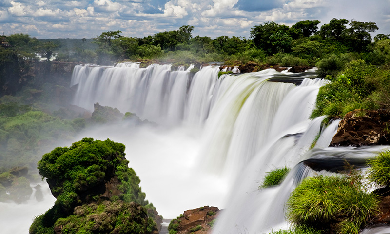
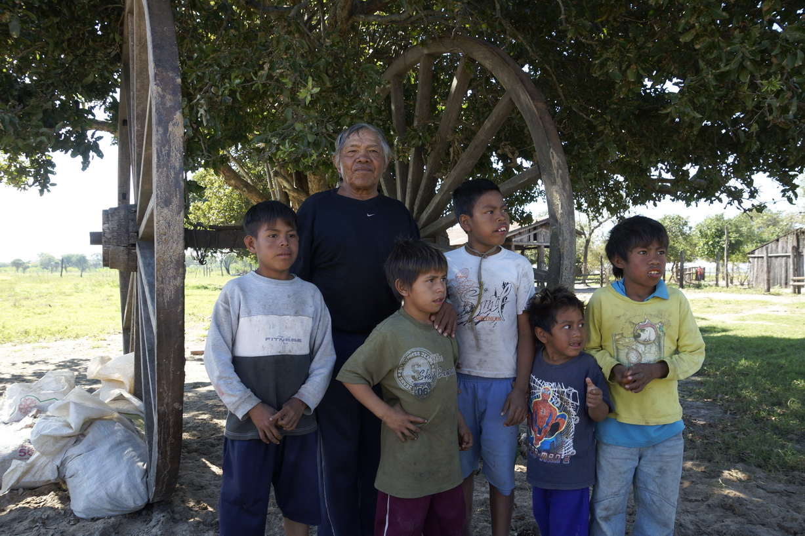

×

Paraguay
Люди
Численность населения - низкая,
Средняя продолжительность жизни — 73 года у мужчин, 79 лет у женщин, метисы 95 %, другие 5 %.
Языки — испанский и гуарани, оба официальные..
Религия - католики 89,6 %, протестанты 6,2 %, другие христиане 1,1 %, прочие и неопределившиеся 1,9 %, атеисты 1,1 %.

История
Первый европеец ступил на землю нынешнего Парагвая в 1525 году, а началом истории страны принято считать 15 августа 1537 года, когда испанские колонизаторы основали Асунсьон. Независимость от Испании (и от Аргентины) Парагвай получил в 1811 году.
____